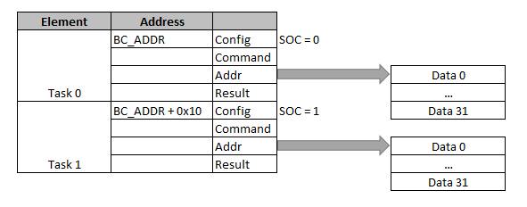

Для перевода ehl_m1553 в режим Контроллера Шины / Bus Controller следует задать CFG.MS=1 и CFG.BE=1.
Работа КШ организована в виде последовательной обработки заданий из списка (каждое задание состоит из передачи сообщения по шине). Начало обработки заданий инициируется записью 1 в CTRL.RUN.
Перед началом работы список заданий следует проинициализировать. Адрес первого задания задается в BC_ADDR перед запуском контроллера. Размещение заданий в памяти (доступной через AHB порт контроллера) представлено на рисунке.
Формат заданий соответствует формату дескрипторов КШ. Каждое задание содержит 4 32-битных слова (Config, Command, Addr и Result). Пользователь заполняет первые 3 поля перед запуском задания. Если задание является последним в списке, для него должен быть установлен Config.SOC. По окончании выполнения задания контроллер заполняет Result (за исключением случая ошибки DMA).
Контроллер последовательно опрашивает дескрипторы (и выполняет задания), пока не обработает дескриптор с CONFIG.SOC=1, либо не случится ошибки в обработке задания при установленном CONFIG.SOE=1.
ehl_m1553 обрабатывает задания (в режиме Bus Controller) в соответствии с дескрипторами, расположенными в памяти. Доступ к дескрипторам, а также доступ к данным осуществляется с помощью DMA, являющегося ведущим на шине AHB. DMA в процессе работы зачитывает дескрипторы и данные, требуемые для следующего трансфера. В процессе работы DMA возможны следующие проблемы:
Замечание. В случае обнаружения ошибок DMA контроллер прекращает обработку цепочки заданий вне зависимости от количества повторений (Config.RC) и наличия элементов в цепочке (Config.SOC). В случае данного вида ошибок, содержимое Result дескриптора не валидно. Актуальное значение содержится в регистре LSTAT.
| Название | Смещение | Доступ | Описание |
|---|---|---|---|
| Config | 0x0 | W | Настройка задания |
| Command | 0x4 | W | Командное слово |
| Addr | 0x8 | W | Адрес буфера данных. Должен быть выравнен до границы 2 байт. |
| Result | 0xC | R | Результат выполнения задания |
Дескрипторы имеют следующий формат:
Config [0x0]: Настройка задания
| Биты | Название | Описание | Доступ |
|---|---|---|---|
| 31:9 | - | Резерв | R |
| 8:6 | RC | Retry Count. Количество попыток передать сообщение (повторная попытак переслать сообщение в случае возникновения ошибки при значении больше 1). Допустимые значения от 1 до 7. | R/W |
| 5 | IOE | Interrupt On Error. Разрешение генерации прерывания в случае ошибки при передаче сообщения: |
R/W |
| 4 | IOC | Interrupt On Completion. Разрешение генерации прерывания при завершении передачи сообщения: |
R/W |
| 3 | SOE | Suspend On Error. Завершение выполнения заданий в случае ошибки в сообщении: |
R/W |
| 2 | SOC | Suspend On Completion. Завершение выполнения заданий после обработки сообщения: |
R/W |
| 1 | RM | Retry mode. Выбор шины для повторной передачи сообщения: |
R/W |
| 0 | BS | Bus selection. Выбор шины для передачи сообщения: |
R/W |
Command [0x4]: Командное слово
| Биты | Название | Описание | Доступ |
|---|---|---|---|
| 31:26 | - | Резерв | R |
| 25:21 | RTA2 | RT Address 2. Адрес удаленного терминала для передачи RT-RT. | R/W |
| 20:16 | RTS2 | RT Subaddress 2 для передачи RT-RT. | R/W |
| 15:11 | RTA | RT Address. Адрес удаленного терминала. | R/W |
| 10 | TR | Transmit (1)/receive (0) | R/W |
| 9:5 | RTS | RT Subaddress | R/W |
| 4:0 | WC | Word count / Mode code | R/W |
Далее приведено значение полей Command для различных видов трансферов.
| Transfer type | RTA | RTS | RTA2 | RTS2 | WC | TR | Data buffer direction |
|---|---|---|---|---|---|---|---|
| Data, BC-to-RT | RT address(0-30) | RT subaddr(1-30) | - | 0 | Word Count | 0 | Read (2-64 bytes) |
| Data, RT-to-BC | RT address(0-30) | RT subaddr(1-30) | - | 0 | Word Count | 1 | Write (2-64 bytes) |
| Data, RT-to-RT | Recv. RT address(0-30) | Recv. RT subaddr(1-30) | Xmit RT Addr(0-30) | Xmit RT Subaddr(1-30) | Word Count | 0 | Write (2-64 bytes) |
| Mode, no data | RT address(0-30) | 0 or 31 | - | - | Mode Code | 1 | Unused |
| Mode, RT-to-BC | RT address(0-30) | 0 or 31 | - | - | Mode Code | 1 | Write (2 bytes) |
| Mode, BC-to-RT | RT address(0-30) | 0 or 31 | - | - | Mode Code | 0 | Read (2 bytes) |
| Broadcast Data, BC-to-RTs | 31 | RTs subaddr(1-30) | - | 0 | Word Count | 0 | Read (2-64 bytes) |
| Broadcast Data, RT-to-RTs | 31 | Recv RTs subaddr(1-30) | Xmit RT Addr(0-30) | Xmit RT Subaddr(1-30) | Word Count | 0 | Write (2-64 bytes) |
| Broadcast Mode, no data | 31 | 0 or 31 | - | - | Mode Code | 1 | Unused |
| Broadcast Mode, BC-to-RT | 31 | 0 or 31 | - | - | Mode Code | 0 | Read (2 bytes) |
| Биты | Название | Описание | Доступ |
|---|---|---|---|
| 31:24 | - | Резерв | R |
| 23:16 | SW2 | Status Word 2. Принятое статусное слово принимающего удаленного терминала в RT-to-RT. Кодируется аналогично SW. | R |
| 15:8 | SW |
Status Word. Принятое статусное слово удаленного терминала (передающего терминала в RT-to-RT).
|
R |
| 7:4 | RC | Retry Count. Количество повторений, после которых завершено задание. | R |
| 3 | TB | Task Bus. Шина, использованная для последней передачи в задании. | R |
| 2:0 | ST | Status. Состояние задания:
|
R |